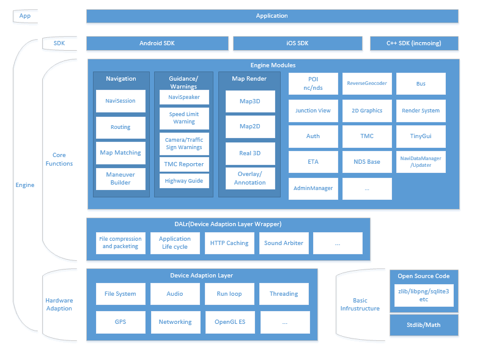

Introduction¶
NaviCore is a hybrid navigation engine. The main features are:
- It supports both proprietary compressed data and NDS data.
- It supports online navigation when no data is pre-installed.
- The core functions (routing, searching, etc) can run both on the mobile devices and servers.
Architecture¶
The engine can be roughly piled up as 3 layers:
- Device adaption layer - Provide cross-platform support of file, network, threading etc.
- Core functions - Most of the navigation functions.
- SDK - Selectively encapsulate C libraries into Java JAR or ObjectiveC Frameworks.
The first two layers are written in C and the SDK layer is written in Java+JNI or ObjectiveC.
Device Adaption Layer¶
This layer defines a set of interfaces for which all platforms must implement, so that all upper layer modules can be insulated from platform dependent problems.
It also provides implementation for platforms including Windows, Windows CE/Windows Mobile, Android, Linux, iOS.
The support for MTK, Windows Phone 8 are discontinued from release 5.0.
Basic Infrastructure¶
This part provides fundamental types and functions.
Most of them are pure mathematical. Such as:
- Rect, Point, Range, Sideness
- String manipulation
- Vector and hashmap
- Mathematic functions
- Hash code generation
- UTF8-UTF16 conversion
- libpng and libjpg
- json encoding/decoding
But some modules are cross-platform by themselves, such as sqlite3.
Core Functions¶
This is the bulkiest part of the engine. It contains all the core navigation functions. Some modules are unrelated. Others may depend on each other.
Navigation
- Routing: Given a RoutePlan(start/via/end points), calculate a route or several routes according the CoseModel.
- MapMatching: Take input of various sensors, give positioning information as output.
- ManeuverBuilder: The the route as input, calculate the maneuver point and turn types along the route.
- NaviSession: Control the dynamic logic of navigation process, including routing, detour, rerouting, management of waypoints.
Guidance/Warnings
- NaviSpeaker: Take maneuver points and the dynamic information of the vehicle as input, it synthesize guidance voices during the navigation process.
- SpeedLimitSpeaker:
- Camera/TrafficSign Waring:
- TiReporter:
- HighwayGuide:
Map Render
- Map3D:
- Map2D:
- Real3D:
- Overlay/Annotation:
Other
- POI search:
- 2D Graphics: Provides drawing of lines, polylines, polygons, texts and bitmaps.
- Render System: It encapsulate OpenGL ES 2.0 and provide rendering of triangles, models and texts. Map3D rely on this module.
- ETA: Provide estimated time of arrival.
SDK¶
This layer selectively delegate the core engine functions to ObjectiveC or Java classes. The client side developers only need to learn this encapsulation layer.
The SDK also contains white papers and generated API reference.